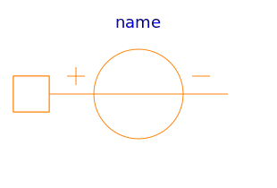
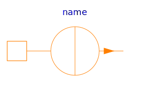

This package contains sources of a magnetic potential difference or a magnetic flux:
| Name | Description |
|---|---|
|  ConstantMagneticPotentialDifference | Constant magnetomotive force |
|
|
Signal-controlled magnetomotive force |
|  ConstantMagneticFlux | Source of constant magnetic flux |
| Signal-controlled magnetic flux source |